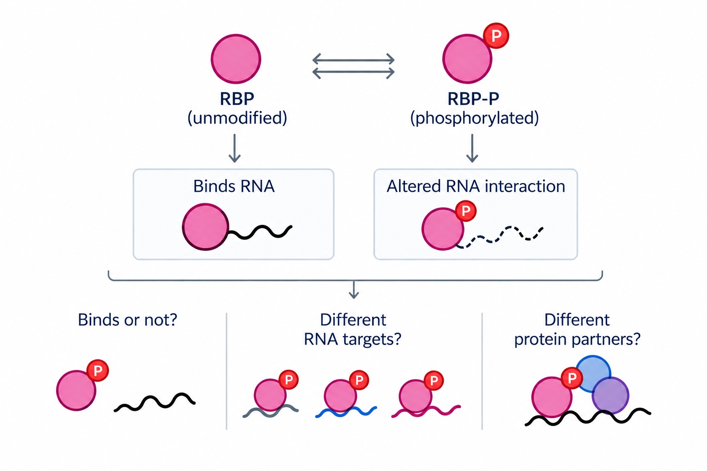

MODIFICATION
Phosphorylation and RBP–RNA interactions
How does phosphorylation reshape protein–RNA interactions?
RNA-binding proteins (RBPs) regulate RNA throughout its life cycle, from processing and transport to translation and degradation. Yet despite more than 2,000 predicted mammalian RBPs, the functions of many remain poorly understood. Part of this complexity comes from their highly interconnected interactions: a single RBP can bind thousands of RNAs, while each RNA can be regulated by multiple RBPs.
Our work suggests that phosphorylation is specific to different assembly states of the same RBP, including its RNA-bound and RNA-free forms. We want to understand whether phosphorylation acts as a molecular switch that changes whether an RBP binds RNA, which RNAs it recognizes, or which protein partners it recruits.
To address this, we are developing new proteomic approaches to directly measure protein–RNA interactions together with their post-translational regulation at scale. We will apply these tools to dynamic cellular responses, asking how signaling-driven changes in phosphorylation reshape RBP interactions over time.
